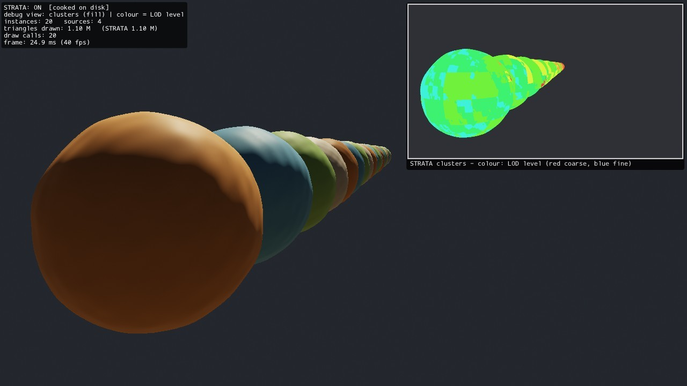
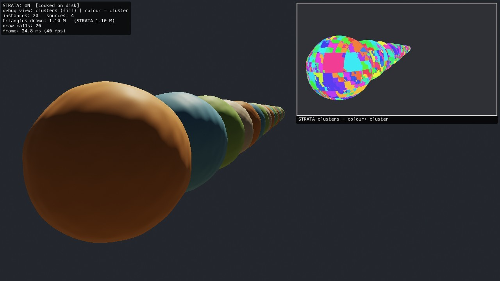
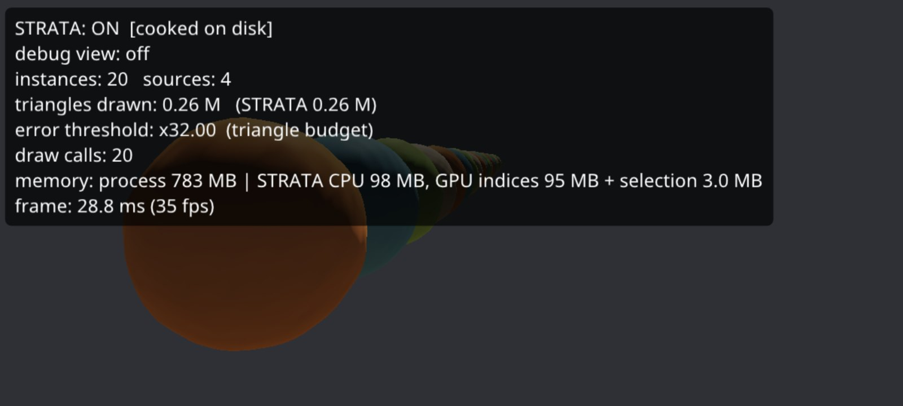

STRATA: cooked geometry on disk, a working hierarchy and a first phone measurement
STRATA cluster hierarchies are now built ahead of time and stored next to the content: the game loads them in a fraction of a second instead of minutes. Bugs that kept STRATA from simplifying geometry were found and fixed, and an automatic triangle budget was added.






The test scene is 20 bumpy spheres of 1,002,252 triangles each (4 different models), about 20 M triangles in total, with no terrain, sky or interface: geometry only. The camera stands next to the nearest sphere and the row recedes into the distance.
Cooking. The aiverse_strata_cook tool builds the cluster hierarchy of every model in a scene and writes it to the geometry scene's strata.cooked folder. A file is tied to its source geometry and the builder version: if the model changes the file is ignored and the hierarchy is built as before. Loading 4 spheres takes 0.4 s on a Mac and about 1.2 s on a phone instead of roughly 6 minutes of building per sphere.
The hierarchy. Leaf clusters were cut in file order and came out as strips with almost every vertex on a border; borders stay locked while simplifying, so the tree stalled: a sphere's coarsest level still had 743 k triangles. Clusters are now compact patches and a group's error tolerance follows its children's size. A sphere's coarsest level is 13 k triangles, and STRATA draws 1.1 M triangles in 20 draw calls instead of 19.4 M.
Cluster selection is cheaper: errors are computed only for nodes the traversal reaches, clusters outside the view are not refined, and the index set is uploaded again only when the selection changes.
The triangle budget (strata.triangleBudget or AIVERSE_STRATA_TRI_BUDGET) raises the error threshold while there are more triangles than the budget. A corner panel shows the STRATA route, whether data came from disk, triangles, threshold, draw calls, memory and frame time; a window on the right shows the clusters coloured by detail level.
Every object of the scene can choose its drawing path in the editor: Auto (STRATA or ordinary LODs per model), STRATA or LOD — in the Static geometry window or the object's strata field.
- Verified
- Mac Studio (M3 Ultra, Metal): 1.1 M triangles and 20 draw calls versus 20 M without STRATA. Samsung Galaxy A05s (Adreno 610, rendering at 1200×540): no budget 16 fps on Vulkan and 20 fps on GLES; with a 250 k triangle budget 35 and 45 fps; without STRATA 4 fps.
- Limitations
- No 60 fps on this phone yet: frame time grows almost linearly with triangles, and in the measurement the builder stopped at 8 levels so STRATA could not go below about 270 k triangles for 20 spheres; the limit is now 16 levels, not yet re-measured. Vulkan is slower than GLES on this phone; the cause is not found yet. The process takes about 750 MB: indices are kept whole and vertices are 60 bytes. Disk streaming of index pages exists but was not enabled in this scene.